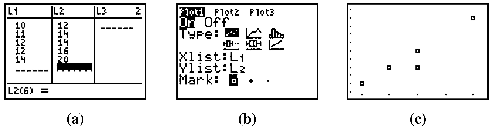
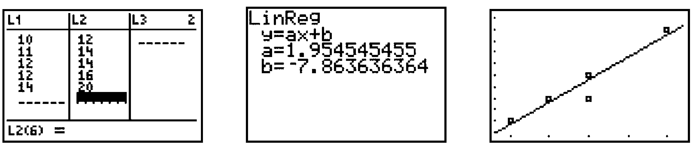

We use the statistics features to plot data and calculate regression equations. Press STAT to see the Statistics menus. We will use only the first two, EDIT and CALC.
Enter the \(x\)-coordinates of the data points under L1 and the \(y\)-coordinates in L2. An example is shown in Figure B.39a. (If there is a previous list under L1 or L2, move the cursor up to L1 or L2 and press CLEARENTER.)
FigureB.39
Access the STAT PLOT menu by pressing 2ndY=, select and turn on Plot1 by pressing ENTERENTER, and set the menu options as shown in Figure B.39b.
Clear out any old equations from the Y= menu, then press ZOOM \(9\) (ZoomStat) to see the scatterplot.
Note: You can use any of the lists L1–L6 to store the data. Change Xlist and Ylist to reflect the appropriate lists.
CautionB.40
When you are through with the scatterplot, press Y= \(\boxed{\uparrow}\) ENTER to turn off Plot1 (or press 2ndY= \(4\) to turn off all the StatPlots). If you neglect to do this, you will continue to see the scatterplot even after you graph a new equation.
Enter the data as in steps 1 and 2 of Making a Scatterplot.
Press STAT \(\boxed{\rightarrow}\) to open the Calculate menu, and select the type of regression equation you want.
Press ENTER and the calculator will display the parameters of the regression equation. See the example in Figure B.41. (You may also see information about \(r\) and \(r^2\text{.}\))
FigureB.41
Note: If you do not use L1 and L2 to store the data, enter the appropriate lists, separated by a comma, after the regression command.